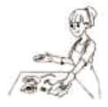

2020年北京市中考英语试题 · 完形填空 第13、14、15、16、17、18、19、20题
二、完形填空

At the end of my first year of high school, I realized I needed to find a summer job. I was tired of having to ask my parents for ____13____ . I wanted to go to the shopping center or movies with friends without having to ask for $20 from my parents. I imagined having a job at a store or at a summer camp where I could play games with children. But what actually happened was ____14____. The only job I managed to find was cleaning up tables at a local restaurant.
At first, the idea of clearing tables upset me. The thought of getting up at dawn(黎明) to go clean up after people made me ___15___ ever asking for a job. The first day was terribly busy. I was running around, racing to get a table ready for the waiting customers. I'll never forget how ___16___ I felt that day, but I'll also never forget sitting down for lunch with my co-workers for the first time. People my age or ten years older all sat together and talked about their days. All of a sudden I was a part of that, and it felt good to be so ____17____ .
I've now worked at the restaurant for almost one year. I've learned to be happy about getting up so early, because I know there're going to be a few good ____18____ every day there.
From starting there as a shy student, I've been able to grow into a person that can go up and ___19___ anyone, at work or anywhere else. I'm also not as sensitive(敏感的) as I used to be-getting an impolite customer might make me feel bad, but very soon I can laugh it off with my co-workers. The little job has given me so much, and I can't wait to go back and continue to ____20____ from my experience.
13. A. foodB. moneyC. attentionD. advice
14. A. excitingB. encouragingC. confusingD. disappointing
15. A. forgetB. enjoyC. regretD. imagine
16. A. tiredB. happyC. curiousD. relaxed
17. A. lovedB. missedC. neededD. included
18. A. dishesB. choicesC. momentsD. customers
19. A. findB. greetC. pushD. stop
20. A. growB. standC. restD. hide
阅读理解